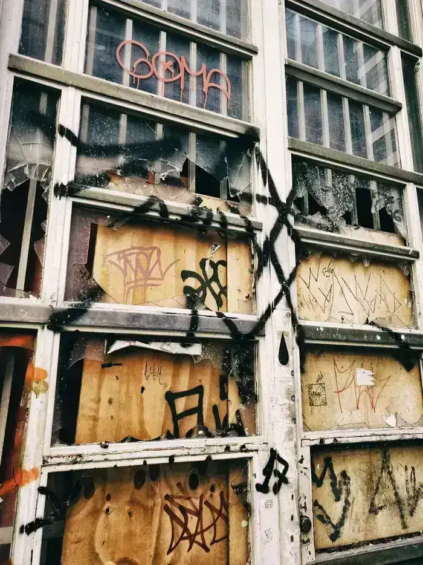
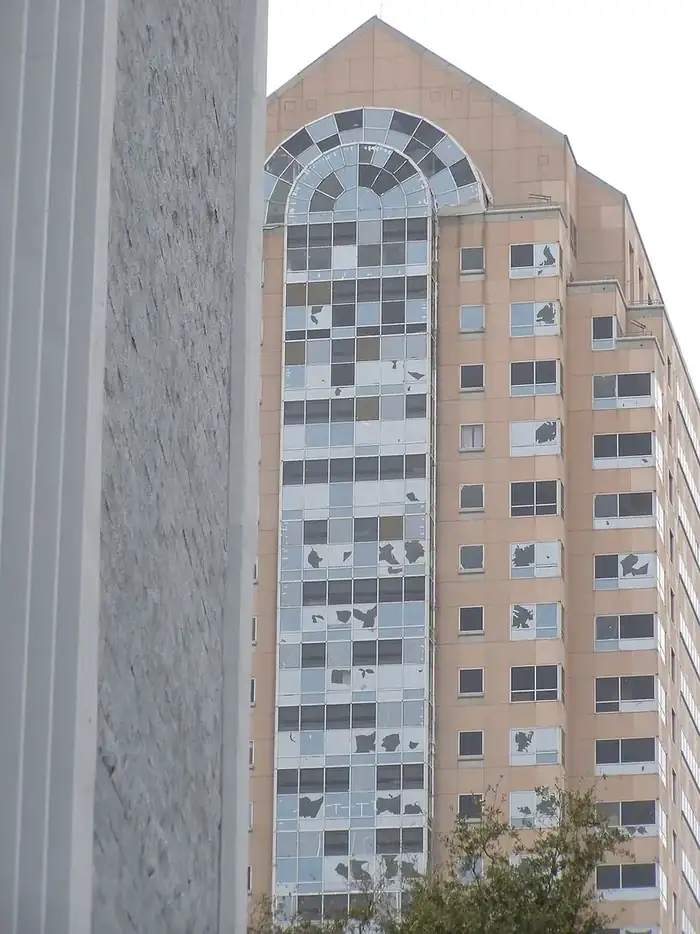
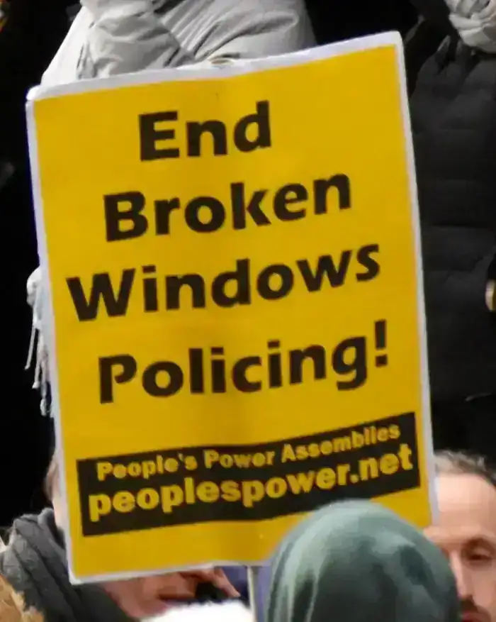

The theory
Kelling and Wilson argued that a broken window left unrepaired signals that nobody cares, which invites more disorder and eventually serious crime. The policy implication was aggressive enforcement against low-level disorder — fare evasion, public drinking, squeegee men — to protect neighbourhoods before they tipped.
Maps, diagrams and images






The theory arrived at a convenient moment. New York hired Bratton and applied it alongside CompStat, and crime fell dramatically through the 1990s. The two facts were presented as cause and effect in a best-selling book and in political rhetoric for a generation.
The trouble with the evidence
Crime fell in the 1990s in cities that did not adopt the strategy, across the country and in several other countries, which makes the New York story much harder to attribute. The leading competing explanations include the end of the crack epidemic, demographic change, rising incarceration and the removal of lead from petrol.
Harcourt and Ludwig compared New York with other large cities and found no clear disorder-policing effect. A Campbell systematic review of policing disorder found modest reductions in disorder and little consistent effect on serious crime. Where effects appear, they are small and specific.
There is also a measurement problem: 'disorder' is in the eye of the observer, and what counts as disorder correlates with who lives in a neighbourhood.
Stop-and-frisk. The strategy's most aggressive form was ruled unconstitutional in 2013 in Floyd v. City of New York: hundreds of thousands of stops a year, overwhelmingly of Black and Latino men, with a weapon found in a small percentage.
Legitimacy. Research on procedural justice finds that how people are treated by police shapes their cooperation and their willingness to report crime — a cost that aggregate crime statistics do not capture.
What survives. Targeted hot-spot policing, in which patrols concentrate on the specific blocks where crime clusters, has much stronger experimental support than disorder enforcement does. The policy lesson is specificity, not broken windows.
The archive labels this live debate because a version of the theory remains in use and some disorder effects are real — but the strong causal claim that carried it into policy has not survived its tests intact.
Why it is in the archive
Because it is a case where a plausible social theory was adopted at scale before being tested, and where the testing changed the field more than it changed the politics.
Related: the lead-crime hypothesis, one of the rival explanations for the 1990s crime drop.
Sources for this page
- Wikipedia, “Broken windows theory” — origins, evidence, criticismen.wikipedia.org
- Kelling & Wilson (1982), The Atlantic — “Broken Windows”www.theatlantic.com
- Harcourt & Ludwig (2006), University of Chicago Law Review — new evidence on broken windowsdoi.org
- Wikipedia, “Floyd v. City of New York” — stop-and-frisk and the 2013 rulingen.wikipedia.org
Open resources on this topic
- PapersOpen-access articles: DOAJ · PubMed Central · Internet Archive Scholar
- BooksPublic-domain and borrowable copies: Open Library · Project Gutenberg · Google Books · Internet Archive
Cite this page
Momin, S. (2026). Broken Windows Policing. The Larger World Archive. https://drsamonline.github.io/LARGE_GLOBE/broken-windows.htmlMomin, Sohil. “Broken Windows Policing.” The Larger World Archive, 2026, https://drsamonline.github.io/LARGE_GLOBE/broken-windows.html.Momin, Sohil. “Broken Windows Policing.” The Larger World Archive, 2026. https://drsamonline.github.io/LARGE_GLOBE/broken-windows.html.@misc{broken2026broken,
author = {Momin, Sohil},
title = {Broken Windows Policing},
year = {2026},
howpublished = {The Larger World Archive},
url = {https://drsamonline.github.io/LARGE_GLOBE/broken-windows.html},
note = {Last reviewed 20 November 2026}
}Last reviewed 20 November 2026 · Corrections policy · this page is not peer reviewed